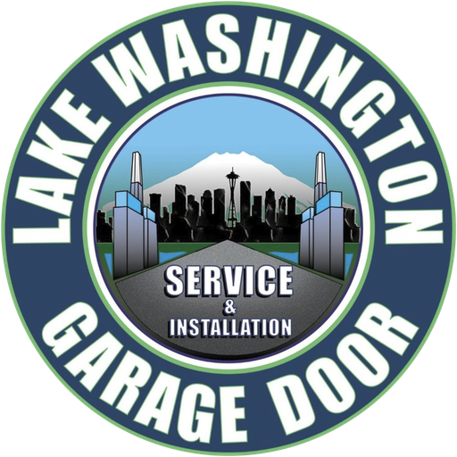
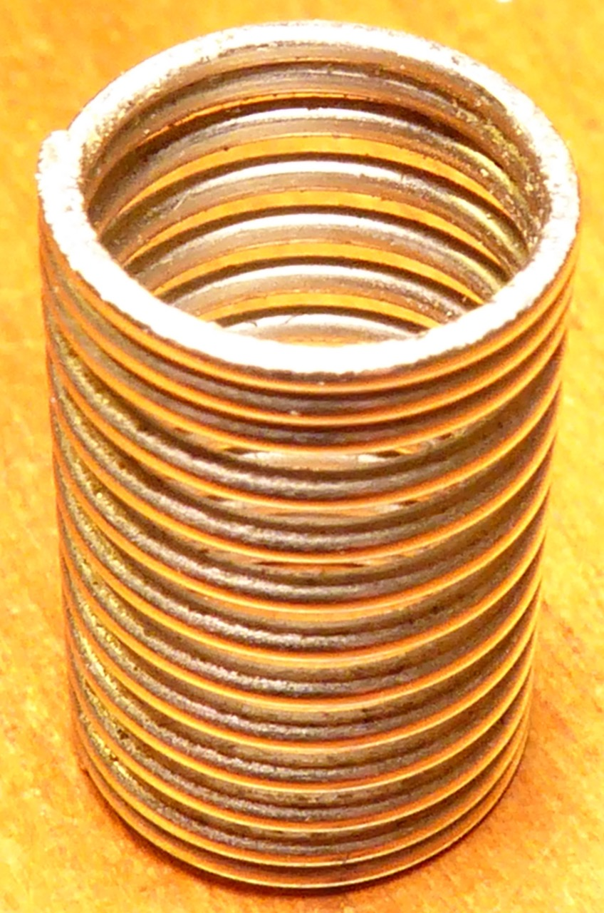
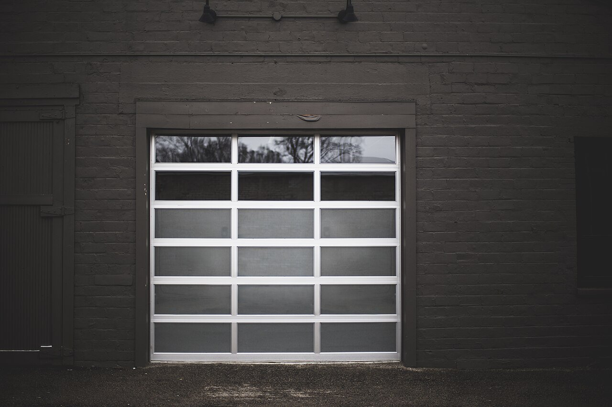
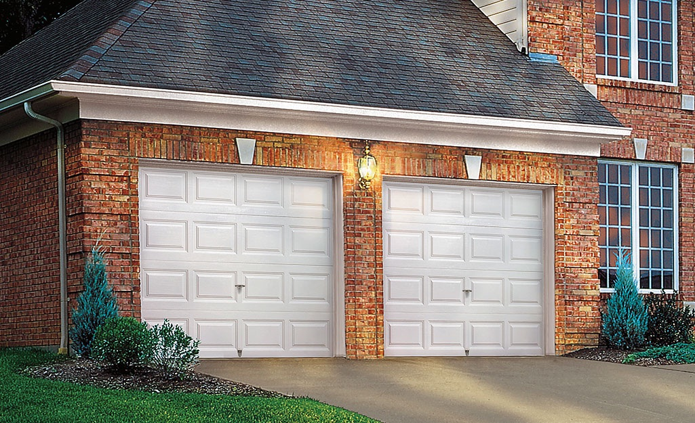
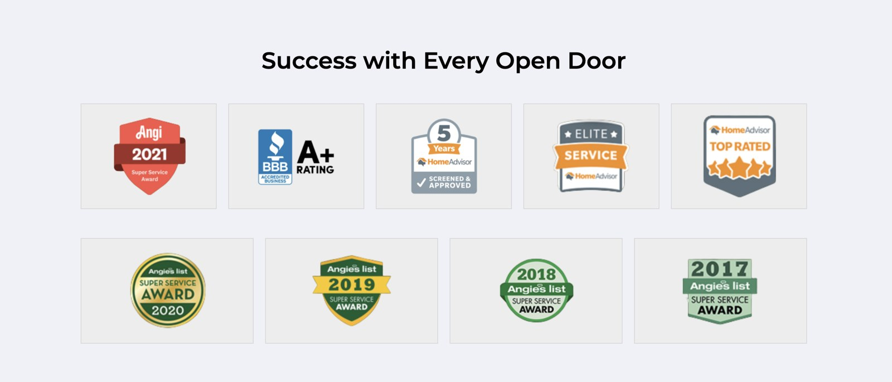
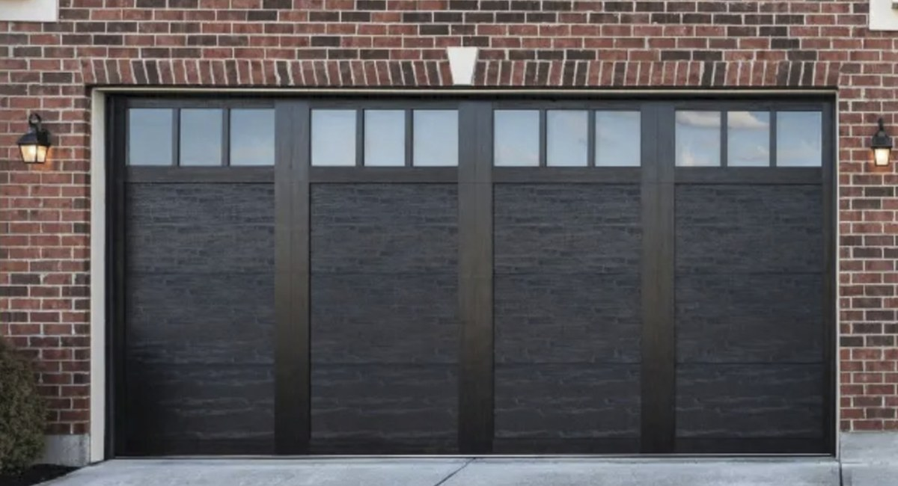
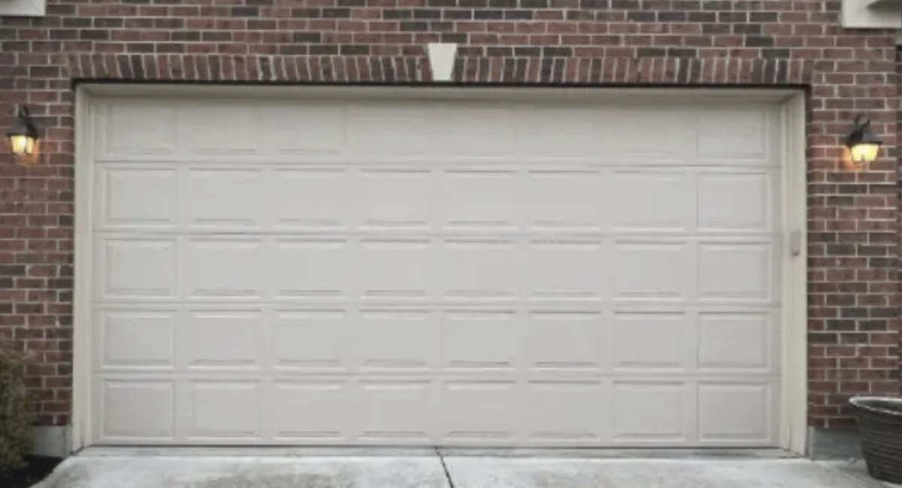
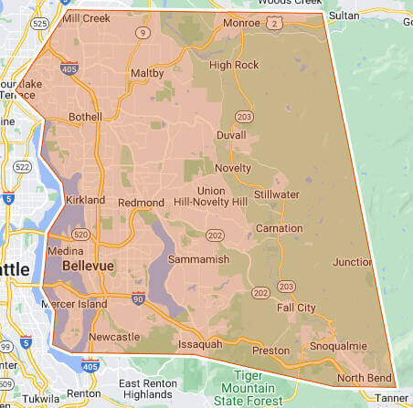

Lake Washington Garage Door Service
Open 8:00 AM – 5:00 PM (hours as listed on Yelp)
- Verified LicenseYelp confirmed a business or employee license.
- Response qualityExcellent
- Response time10 minutes
Serving the Lake Washington Eastside
Broken spring, dead opener, door off its tracks? Danny and the team have kept Eastside garage doors running: 20+ years in business · since 2014.
Same-day & emergency repairs · Free estimates on new doors · Lifetime warranties available
One team for everything garage-door. Tap a service to see the details.

Doors come off their tracks, panels bend, hinges wear, and rollers seize. We diagnose the real cause instead of just treating the symptom — most repairs are done in a single visit.

A snapped torsion or extension spring is the #1 reason a door suddenly won't lift — and it's genuinely dangerous to tackle yourself. We carry the right springs on the truck and replace them safely, in pairs, so the second one doesn't fail a week later.

From dead remotes and worn gears to a full replacement, we service all major opener brands. Upgrading? Newer belt-drive units are dramatically quieter and add smartphone control and battery backup for power outages.

A new garage door is one of the best-returning upgrades for curb appeal — and modern insulated doors are quieter and more energy-efficient. We give free estimates, help you choose a style and R-value that fit the home, and haul away the old door.

The small parts do the quiet work. Worn nylon rollers get noisy, frayed lift cables are a safety risk, and dented tracks make a door bind. Replacing them early is cheap insurance against a door that fails completely.

A garage door cycles thousands of times a year. An annual tune-up — lubrication, balance check, spring and cable inspection, sensor test — catches the parts about to fail and keeps the door running smoothly and safely.

Danny Granfors founded Lake Washington Garage Door Service in 2014 to give the community prompt, dependable service. Known for his professionalism and friendly demeanor, Danny puts customer satisfaction first, and his team is never paid on commission.
He takes pride in superior workmanship and customer service. In 2019 the company expanded to offer comprehensive garage services, including organization systems, flooring, sheetrock, and more.

Open 8:00 AM – 5:00 PM (hours as listed on Yelp)
5.0 on Yelp (28 reviews)Read our reviews on Yelp → BBB Accredited, rated A+Accredited since 2015 · view BBB profile →
★★★★★
“Danny was prompt, had the right replacement parts in his truck, and fixed the door cleanly and efficiently.”
— Trd C.
Redmond, WA · Sep 2, 2026 · Yelp review by Trd C.
★★★★★
“Very professional evaluation with no upselling and a very reasonable quote. Had the work done quickly and perfectly.”
— Gordon N.
Seattle, WA · Oct 12, 2025 · Yelp review by Gordon N.
★★★★★
“Didn’t try to sell me things I didn’t want. Had all the parts he needed on hand. Fair pricing.”
— John V.
San Francisco, CA · Sep 16, 2025 · Yelp review by John V.
★★★★★
“Scheduling was seamless and they kept me updated. Installation team showed up punctual, were pleasant, and did a quality job.”
— John Jacobs
Kenmore, WA · Oct 30, 2025 · Yelp review by John Jacobs
★★★★★
“Right off the bat, he told us exactly what we should do, why we should do it, and told us what it would cost.”
— Katy M.
Bellevue, WA · Feb 1, 2023 · Yelp review by Katy M.
Quotes are excerpts of public Yelp reviews, shown with the reviewer’s name and a link to our Yelp page.
Drag the handle to compare.


BeforeAfterThe quickest way is a phone call. After hours, send your details and we'll call you back.
Call 425-301-7543Danny or the team will call you back shortly. Need help right now? Call us directly.
Call 425-301-7543Email: dannygranfors@lwdoorservice.com
Office: 6513 132nd Ave NE, Ste 226, Kirkland, WA 98033
Hours: 8:00 AM – 5:00 PM (as listed on Yelp) · Weekends by phone
Yes. Call 425-301-7543 and we prioritize doors that are stuck shut or stuck open. Most Eastside calls are handled the same day.
We offer lifetime warranties on most parts and services. The exact terms are given to you in writing with your estimate.
We install the parts we carry on the truck so every repair is covered by our warranty, so we do not install customer-supplied parts.
Check is preferred, and cards are accepted.
Usually yes. It is most often a tune-up: we inspect the door, lubricate the moving parts, tighten the hardware and adjust the balance.
Yes, free estimates on new doors. For repairs we quote the price upfront, before any work starts.
It depends on the spring size, whether one or both springs are replaced, and your door's weight. We give you a firm price before we start.
Kirkland, Bellevue, Redmond, Sammamish, Bothell, Woodinville, Kenmore, Mercer Island, Juanita, Totem Lake and the Seattle Eastside. Not sure? Call us.
Based on the east side of Lake Washington, we cover the surrounding communities with fast, local service. Not sure if you're in our area? Give us a call — if we can't help, we'll point you to someone who can.
